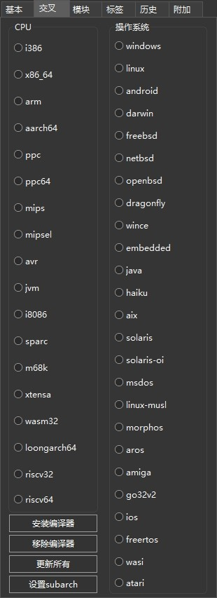

前言
之前的配置Lazarus免重装和Lazarus开发环境配置主要是针对windows平台的，同样也适用于linux平台，只是需要稍微变通一些。当然，由于linux平台本身的多样性，自然也会有一些特殊的坑，例如：解决Debian上Lazarus输入法问题。
在交流中，群友们也多次提到并推荐用fpcupdeluxe，体验了下，直观的感受就是——非常适合折腾！当然，不用来折腾的话也是非常方便的。
准备工作
访问GitHub
该问题请自行解决。
安装Git
fpcupdeluxe是直接从源码构建Lazarus的，而Lazarus及fpc的源码是托管在GitLab上的，其本身依赖的工具又是在GitHub上，因此Git是必不可少的。安装可参考Git的基本使用。
下载fpcupdeluxe
可以在fpcupdeluxe的Releases页选择合适的版本下载fpcupdeluxe。linux平台注意要给予执行权限。
安装
核心IDE安装
- 建议专门建一个目录用于安装，例如就叫
fpcupdeluxe，然后把下载的fpcupdeluxe文件放入，并运行。首次运行会有是否记录日志的提示，依据自己情况选择。

-
配置
界面语言及安装路径，建议与fpcupdeluxe安装文件相同。 -
点
Stable/稳定版本（也可选择其它版本），确认后即可自动下载依赖，然后完成基本IDE的安装。如果安装失败了，排除问题后，再次操作3.即可。
对于linux，可能会提示缺少依赖，如：
|
|
此时，根据提示安装对应的包，然后再次操作3.即可。对于上面这个提示：
|
|
注意：此时安装完的IDE可以说是相当精简的了，部分标准安装包安装的内容可以按需进行单独安装。
可选包安装
-
对于喜欢一体式窗口的人来说，可以直接在
fpcupdeluxe中Modules/模块页点Dock按钮完成。 -
对于喜欢在IDE里安装第三方在线组件包的人，可以直接在
fpcupdeluxe中Modules/模块页点OPM/在线包管理器按钮完成。 -
对于使用第三方在线组件的人，可以直接在
fpcupdeluxe中Modules/模块页选择要安装的组件，点Install module/安装模块按钮完成；也可在IDE中进行安装。
交叉编译器安装
对于有交叉编译需求的人来说，这应该算是使用fpcupdeluxe安装最亮眼的功能。

在fpcupdeluxe中Cross/交叉页选择CPU和OS/操作系统，点Install compiler/安装编译器按钮完成。
2025-08-19补充
补充1
debian 13会提示libgdk-pixbuf2.0-dev可能已废弃，需用libgdk-pixbuf-xlib-2.0-dev替代
|
|
补充2
fpcupdeluxe已经很久没更新了，lazarus官方已经到4.2了，fpcupdeluxe还停留在3.6，中间差了3.8、4.0两个版本，但是可以通过修改fpcup.ini文件来安装，毕竟fpcupdeluxe是通过编译源码来安装lazarus的。
在fpcup.ini文件中的[ALIASlazURL]节添加以下内容：
|
|
然后在[ALIASlazTAG]节添加以下内容：
|
|
之后，即可在fpcupdeluxe中选择指定的版本进行安装了。